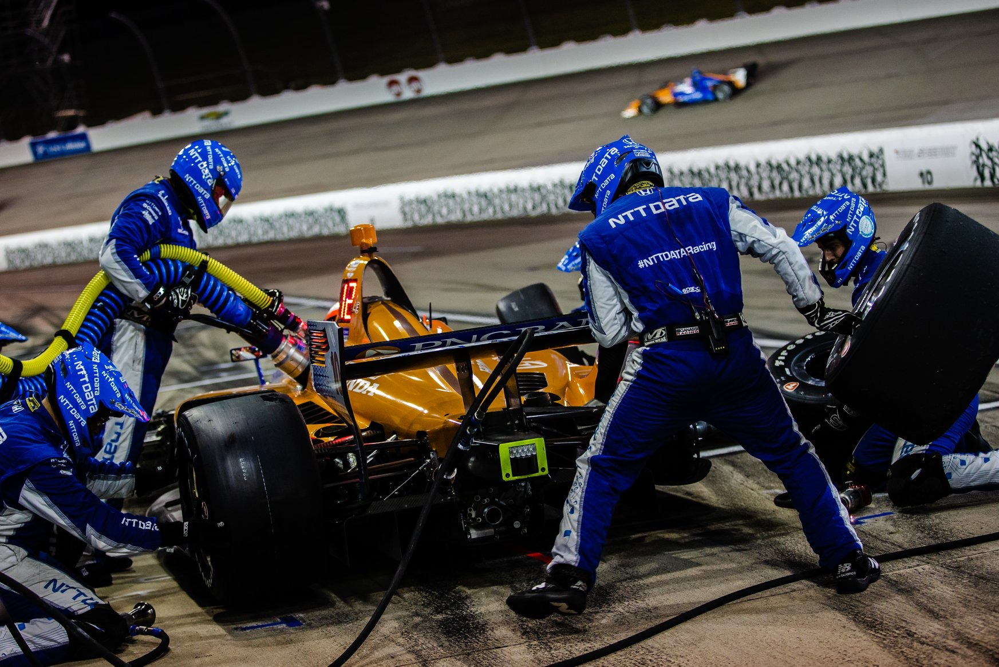

[About] | About this site
I started working on this site after seeing Fabien Sanglard's personal website. The minimalist styling and relatively easy tech used inspired me to create one of my own.
From 2013-2021, I was a combo sysadmin/pit crew member for an IndyCar and IMSA team. My goal was to take the knowledge I gained from the job and move into the DevOps field. As I started following the cloudresumechallenge.dev outline, I continued work on this site in order to have a place to make a few little articles about what I've worked on. I have since expanded it to include some other technical projects (personal and professional) that I've worked on.
In February 2021, I was able to fulfill my goal of getting a DevOps related job for a large software company in my area.
